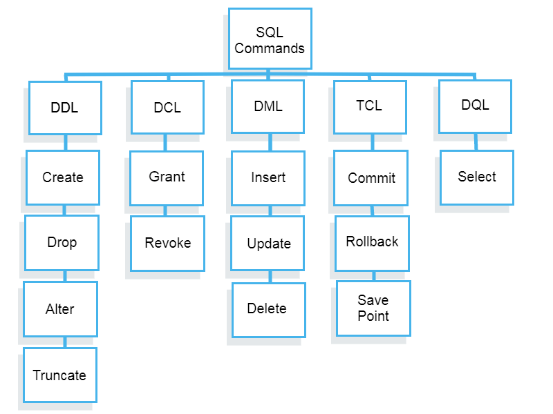

Beginner's Guide to Structured Query Language (SQL)


What is SQL
- SQL, or Structured Query Language, is a domain-specific programming language used for managing and manipulating relational databases. It serves as a standard interface for interacting with these databases. SQL is designed to work with structured data stored in tables, and it provides a set of commands and syntax for performing various operations on this data, including data retrieval, data insertion, data updating, and data deletion.
- SQL allows users to define, query, and manipulate data, making it an essential tool for working with structured data in a wide range of applications, from business databases to data analytics and more.
Brief History of SQL
- It was developed in the 1970s at IBM by researchers Raymond Boyce and Donald Chamberlin, who wanted to create a language for querying and managing data in the System R project.
- In the 1970s and 1980s, SQL evolved as a standard language for relational databases.
- In 1986, the first SQL standard was published by the American National Standards Institute (ANSI).
- The SQL standard has been continually updated and extended, with various versions and additions by different database vendors, including Oracle, IBM, Microsoft, and PostgreSQL.
Why is SQL important in data management?
SQL is critically important in data management for several reasons:
- Data Retrieval and Analysis: SQL enables efficient and powerful data retrieval. It allows users to extract specific data from large datasets quickly, which is essential for data analysis and decision-making.
- Data Modification: SQL supports data manipulation, making it possible to insert, update, and delete records in a database. This is crucial for maintaining data accuracy and integrity.
- Data Integrity: SQL databases enforce data integrity through mechanisms like constraints and relationships, ensuring that data remains accurate and consistent.
- Data Security: SQL databases provide access control, allowing administrators to define who can access and modify data, thereby enhancing data security.
- Scalability: SQL databases can scale to handle large datasets, making them suitable for businesses and organizations with evolving data needs.
- Standardization: SQL is a widely adopted and standardized language for relational databases, ensuring compatibility and interoperability across various database systems.
- Reporting and Analytics: SQL is a primary tool for generating reports and conducting data analytics, which are crucial for understanding business performance and trends.
- Data Warehousing: SQL is used extensively in data warehousing solutions, making it possible to consolidate and manage large volumes of historical data for analysis.
How SQL Works?
When you are executing an SQL command for any RDBMS, the system determines the best way to carry out your request and SQL engine figures out how to interpret the task. There are various components included in this process. These components are −
- Query Dispatcher
- Optimization Engines
- Classic Query Engine
- SQL Query Engine, etc.

Database management system
A DBMS, or database management system, is a software application that organizes, stores, and manages data. DBMSs are used in a wide variety of applications, including e-commerce, banking, healthcare, and education.
Types of DBMS
There are two main types of DBMSs:
- Relational DBMS: Relational DBMSs store data in tables, with rows representing records and columns representing attributes.
Relational DBMSs use a structured query language (SQL) to access and manipulate data.
Examples of RDBMS: Some well-known RDBMS systems include:
- MySQL: MySQL is a free and open-source relational DBMS that is popular for web applications.
- Oracle Database: Oracle Database is a commercial relational DBMS that is used by large enterprises.
- PostgreSQL: PostgreSQL is a free and open-source relational DBMS that is known for its reliability and scalability.
- Microsoft SQL Server: Microsoft SQL Server is a commercial relational DBMS that is widely used in Windows environments.
- SQLite SQLite is a lightweight and portable relational database management system (RDBMS) that is built into Android, iOS, and other operating systems. It is a popular choice for mobile applications and other resource-constrained environments.
- Non-relational DBMS: Non-relational DBMSs store data in a variety of formats, including documents, key-value pairs, and graphs.
Non-relational DBMSs are often used to store large amounts of unstructured data, such as images, videos, and social media posts.
- MongoDB: MongoDB is a document-oriented database that is popular for web applications and mobile apps.
- Redis: Redis is an in-memory key-value database that is often used for caching and messaging.
- Cassandra: Cassandra is a distributed database that is often used for big data applications.
- Neo4j:: Neo4j is a graph database that is often used for social network analysis and fraud detection.
PostgreSQL
For more details on PostgreSQL can be found out my page: PostgreSQL basics. Here, I have discussed in detail about how PostgreSQL can be installed on WIndows, MacOS, Linux (Ubuntu). Also creation of databse, tables etc are discussed.
MySQL and PostgreSQL
| Feature | MySQL | PostgreSQL |
|---|---|---|
| Data Types | Wide range of data types, but limited support for complex types. | Extensive data type support, including arrays, JSON, and custom types. |
| ACID Compliance | Compliant | Compliant |
| SQL Compatibility | May have less strict compliance with SQL standards. | Strict adherence to SQL standards. |
| Performance | Known for speed and performance, especially with read-heavy operations. | Preferred for complex queries and write-heavy workloads. |
| Advanced Features | Offers replication, clustering, and partitioning (some require commercial versions). | Includes full-text search, spatial data support, and extensibility through custom functions. |
| Concurrency Control | Uses MVCC but may have limitations in handling high concurrency. | Advanced MVCC implementation capable of high concurrency. |
| Licensing | Primarily under GPL, which may pose licensing challenges for proprietary software. | Released under a more permissive PostgreSQL License. |
| Community and Support | Active community with extensive documentation. | Robust community known for support in complex use cases. |
| Replication | Offers various replication options, including multi-source replication. | Provides logical replication for data distribution. |
| Scalability | Horizontally scalable with options for sharding. | Horizontally scalable with tools like Citus for distributed tables. |
SQL categories
SQL commands can be categorized into different types based on their purposes. The five main categories are:
- Data Definition Language (DDL):
- Purpose: DDL commands are used for defining and managing the structure of database objects, such as tables, indexes, and constraints.
- Examples:
ALTER TABLE, DROP TABLE, CREATE INDEX, CREATE VIEW, CREATE PROCEDURE.
- Explanation: DDL commands are essential for creating and modifying the schema of a database. They define the structure and metadata of the database objects.
- Data Manipulation Language (DML):
- Purpose: DML commands are used for managing and manipulating data stored in the database.
- Examples:
INSERT, UPDATE, DELETE, MERGE.
- Explanation: DML commands allow you to insert new records, update existing data, or delete records in the database tables.
- Data Query Language (DQL):
- Purpose: DQL commands are used to retrieve data from the database.
- Example:
SELECT.
- Explanation: The primary purpose of DQL is to query the database for data. SELECT statements allow you to retrieve specific columns and rows from one or more tables.
- Data Control Language (DCL):
- Purpose: DCL commands are used to control access and permissions on the database.
- Examples:
GRANT, REVOKE.
- Explanation: DCL commands enable you to grant or revoke permissions to users or roles, controlling who can perform various database operations.
- Transaction Control Language (TCL):
- Purpose: TCL commands are used to manage transactions in the database.
- Examples:
COMMIT, ROLLBACK, SAVEPOINT
- Explanation: TCL commands are crucial for controlling transactions, ensuring data consistency and integrity. COMMIT finalizes changes, ROLLBACK undoes them, and SAVEPOINT creates points for partial rollbacks.
SQL query, functions and operators
- Operators in the WHERE clause:
We can operate with different operators in the WHERE clause:
Operator Description = Equal to < Less than > Greater than ≤ Less than or equal to ≥ Greater than or equal to <> Not equal to != Not equal to LIKE, ILIKE Check if a value matches a pattern (case sensitive) AND Logical AND OR Logical OR IN Check if a value is between a range of values BETWEEN Check if a value is between a range of values IS NULL Check if a value is NULL NOT Makes a negative result, e.g., NOT LIKE, NOT IN, NOT BETWEEN - Querying data:
Function Description SELECT Show you how to query data from a single table. COLUMN ALIASES Learn how to assign temporary names to columns or expressions in a query. ORDER BY Guide you on how to sort the result set returned from a query. SELECT DISTINCT Provide you with a clause that removes duplicate rows in the result set. - Filtering data:
Function Description WHERE Filter rows based on a specified condition. LITMIT Get a subset of rows generated by a query. FETCH Limit the number of rows returned by a query. IN Select data that matches any value in a list of values. BETWEEN Select data that is a range of values. LIKE Filter data based on pattern matching. IS NULL Check if a value is null or not. - Joining multiple tables:
Function Description JOINS Show you a brief overview of joins in PostgreSQL. TABLE ALIASES Describes how to use table aliases in the query. Inner Join Select rows from one table that has the corresponding rows in other tables. Left Join Select rows from one table that may or may not have the corresponding rows in other tables. Self-join Join a table to itself by comparing a table to itself. Full Outer Join Use the full join to find a row in a table that does not have a matching row in another table. Cross Join Produce a Cartesian product of the rows in two or more tables. Natural Join Join two or more tables using implicit join conditions based on the common column names in the joined tables. - Grouping data:
Function Description Group By Divide rows into groups and apply an aggregate function on each. Having Apply conditions to groups. - Set Operations:
Function Description Union Combine result sets of multiple queries into a single result set. Intersect Combine the result sets of two or more queries and return a single result set that has the rows appear in both result sets. Except Return the rows in the first query that do not appear in the output of the second query. - Grouping sets, Cube, and Rollup:
Function Description Grouping Sets Generate multiple grouping sets in reporting. Cube Define multiple grouping sets that include all possible combinations of dimensions. Rollup Generate reports that contain totals and subtotals. - Subquery:
Function Description Subquery Write a query nested inside another query. ANY Retrieve data by comparing a value with a set of values returned by a subquery. ALL Query data by comparing a value with a list of values returned by a subquery. EXISTS Check for the existence of rows returned by a subquery. - Common table expressions:
Function Description PostgreSQL CTE Introduce you to PostgreSQL common table expressions or CTEs. Recursive query using CTEs Discuss the recursive query and learn how to apply it in various contexts. - modifying data:
Function Description Insert Guide you on how to insert a single row into a table. Insert multiple rows Show you how to insert multiple rows into a table. Update Update existing data in a table. Update join Update values in a table based on values in another table. Delete Delete data in a table. Upsert Insert or update data if the new row already exists in the table. - Transactions:
Function Description PostgreSQL Transactions Show you how to handle transactions in PostgreSQL using BEGIN, COMMIT, and ROLLBACK statements. - IMport and export data:
Function Description Import CSV file into Table Show you how to import CSV file into a table. Export PostgreSQL Table to CSV file Show you how to export tables to a CSV file. - Managing Table:
Function Description DATA TYPES Cover the most commonly used PostgreSQL data types. CREATE A TABLE Guide you on how to create a new table in the database. SELECT INTO & CREATE TABLE AS Shows you how to create a new table from the result set of a query. AUTO-INCREMENT COLUMN WITH SERIAL Uses SERIAL to add an auto-increment column to a table. SEQUENCES Introduce you to sequences and describe how to use a sequence to generate a sequence of numbers. IDENTITY COLUMN Show you how to use the identity column. ALTER TABLE Modify the structure of an existing table. RENAME TABLE Change the name of the table to a new one. ADD COLUMN Show you how to add one or more columns to an existing table. DROP COLUMN Demonstrate how to drop a column of a table. CHANGE COLUMN DATA TYPE Show you how to change the data type of a column. RENAME COLUMN Illustrate how to rename one or more columns of a table. DROP TABLE Remove an existing table and all of its dependent objects. TRUNCATE TABLE Remove all data in a large table quickly and efficiently. TEMPORARY TABLE Show you how to use a temporary table. COPY A TABLE Show you how to copy a table to a new one. - Constraints:
FUNCTION Description PRIMARY KEY Illustrate how to define a primary key when creating a table or adding a primary key to an existing table. FOREIGN KEY Show you how to define foreign key constraints when creating a new table or add foreign key constraints for existing tables. CHECK CONSTRAINT Add logic to check value based on a Boolean expression. UNIQUE CONSTRAINT Make sure that values in a column or a group of columns are unique across the table. NOT NULL CONSTRAINT Ensure values in a column are not NULL. - Data types:
FUNCTION Description BOOLEAN Store TRUE and FALSE values with the Boolean data type. CHAR, VARCHAR, and TEXT Learn how to use various character types including CHAR, VARCHAR, and TEXT. NUMERIC Show you how to use NUMERIC type to store values that precision is required. INTEGER Introduce you to various integer types in PostgreSQL including SMALLINT, INT, and BIGINT. DATE Introduce the DATE data type for storing date values. TIMESTAMP Understand timestamp data types quickly. INTERVAL Show you how to use the interval data type to handle a period of time effectively. TIME Use the TIME datatype to manage time of day values. UUID Guide you on how to use UUID datatype and how to generate UUID values using supplied modules. ARRAY Show you how to work with arrays and introduce you to some handy functions for array manipulation. HSTORE Introduce you to the data type which is a set of key/value pairs stored in a single value in PostgreSQL. JSON Illustrate how to work with the JSON data type and show you how to use some of the most important JSON operators and functions. USER-DEFINED DATA TYPES Show you how to use the CREATE DOMAIN and CREATE TYPE statements to create user-defined data types. - Conditional expressions and operators:
FUNCTION Description CASE Show you how to form conditional queries with CASE expression. COALESCE Return the first non-null argument. You can use it to substitute NULL by a default value. NULLIF Return NULL if the first argument equals the second one. CAST Convert from one data type into another, e.g., from a string into an integer, from a string into a date.
Why do we use SQL when we can use Power Bi for data analysis?
Power BI does offer data transformation capabilities, and for some scenarios, it may be sufficient to perform data extraction, transformation, and loading (ETL) tasks directly within Power BI. However, there are still several practical reasons to use SQL alongside Power BI, especially in more complex or enterprise-level scenarios. Let's explore a practical example to illustrate this:
- Data Volume and Performance: The retail company generates millions of sales transactions daily, and the dataset is massive. While Power BI can handle large datasets, the performance may become a concern as the data volume grows. SQL databases are designed for handling and optimizing the storage and retrieval of large datasets efficiently.
- Data Integration: The retail company collects data from various sources, including point-of-sale systems, online sales platforms, and inventory management systems. Using SQL, they can integrate and consolidate data from these diverse sources into a single database or data warehouse.
- Data Cleansing and Validation: SQL provides more advanced data cleansing and validation capabilities than Power BI. For example, it can handle complex data quality checks, identify and correct data anomalies.
- Historical Data Storage: The retail company needs to store historical sales data for trend analysis and forecasting. SQL databases are well-suited for maintaining historical data, allowing you to store and archive data over time while still making it accessible for reporting in Power BI.
- Data Security and Access Control: SQL databases offer robust security features, including user access control, encryption, and auditing. This ensures that sensitive sales data is protected and only accessible to authorized users, even before it's imported into Power BI.
- ETL in SQL: Data extraction, transformation, and cleansing tasks are performed in SQL. SQL scripts are used to integrate data from various sources, cleanse it, and store it in a structured format in the database.
- Power BI Reporting: Power BI connects to the SQL database, retrieves the cleansed and transformed data, and creates interactive reports and dashboards.
- Scheduled Refresh: Power BI can be configured to schedule data refreshes, pulling in the latest data from the SQL database on a regular basis.
Scenario:
Consider a large retail company that operates in multiple regions and wants to analyze its sales data to make informed business decisions.
Reasons to Use SQL:
How SQL and Power BI Work Together:
By using SQL for data preparation and Power BI for reporting, the retail company can efficiently manage and analyze its vast sales dataset while ensuring data quality, performance, and security. This combined approach provides a comprehensive solution for data analysis and reporting needs.
Reference:
- Visit the "Learn about PostgreSQL"
- Visit the "DBMS Tutorials page"
- Visit my "Github repository on SQL" to learn about basics and some example projects.
- Visit my "Github repository" to learn about databases.
- Visit PostgreSQL tutoral website